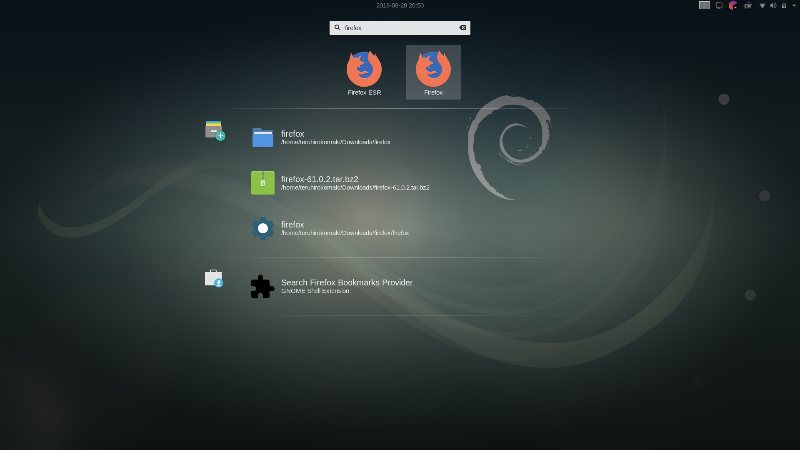
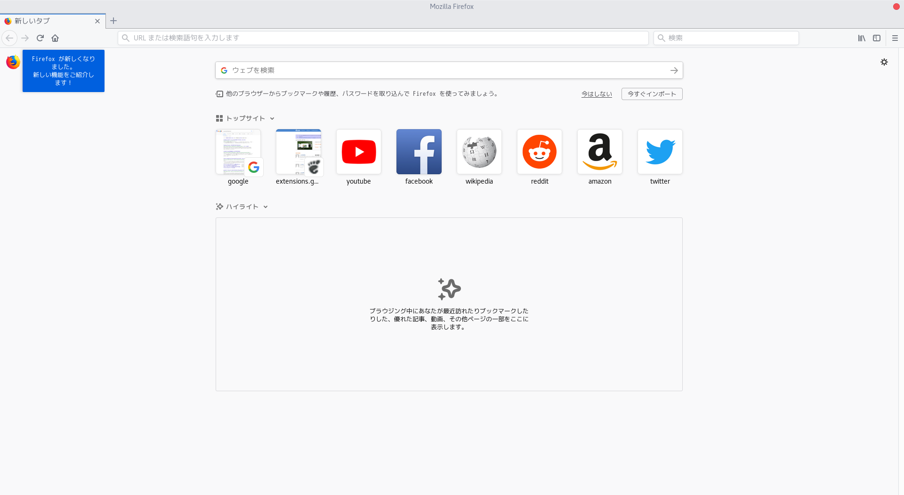

ご存知の通りDebian Stretch(GNOME)には、Firefox ESRが入っています。
今回は、Firefox ESRではなく、最新のFirefoxをインストールするときのメモ。
ダウンロード
Firefoxからダウンロードします。
任意の場所に保存してください。
今回はDownloadsとして進めます。
Downloadsにfirefox-61.0.2.tar.bz2(バージョン番号は気にせず…)がダウンロードされると思います。
展開
展開します。
cd ~/Downloads
Downloads $ tar xf firefox-61.0.2.tar.bz2
展開すると、こんな感じだと思います。
Downloads $ ls -la
total 57788
drwxr-xr-x 3 teruhirokomaki teruhirokomaki 4096 Aug 28 20:10 .
drwxr-xr-x 28 teruhirokomaki teruhirokomaki 4096 Aug 28 20:32 ..
drwxr-xr-x 9 teruhirokomaki teruhirokomaki 4096 Aug 28 11:20 firefox
-rw-r--r-- 1 teruhirokomaki teruhirokomaki 52674082 Aug 28 11:07 firefox-61.0.2.tar.bz2
optに移動
firefoxをoptに移動します。
Downloads $ sudo cp -r firefox /opt/
[sudo] password for user
optを見てみます。
Downloads $ ls -la /opt/
total 16
drwxr-xr-x 4 root root 4096 Aug 28 20:37 .
drwxr-xr-x 23 root root 4096 Aug 28 10:14 ..
drwxr-xr-x 9 root root 4096 Aug 28 20:37 firefox
drwxr-xr-x 3 root root 4096 Aug 28 10:45 google
デスクトップアイコンの作成
デスクトップアイコンを作成します。
いちから作成するのは面倒くさいので、既存のFirefox ESRを複製して使います。
デスクトップアイコンは、以下にあります。
applications $ pwd
/usr/share/applications
applications $ ls
bluetooth-sendto.desktop gnome-chess.desktop gnome-user-accounts-panel.desktop openjdk-8-policytool.desktop quadrapassel.desktop
brasero.desktop gnome-color-panel.desktop gnome-user-share-webdav.desktop org.gnome.baobab.desktop rhythmbox.desktop
brasero-nautilus.desktop gnome-control-center.desktop gnome-wacom-panel.desktop org.gnome.Books.desktop rhythmbox-device.desktop
ca.desrt.dconf-editor.desktop gnome-datetime-panel.desktop goldendict.desktop org.gnome.Calendar.desktop rygel.desktop
caffeine.desktop gnome-disk-image-mounter.desktop google-chrome.desktop org.gnome.Characters.desktop scim-setup.desktop
caffeine-indicator.desktop gnome-disk-image-writer.desktop gvim.desktop org.gnome.Cheese.desktop seahorse.desktop
debian-reference-common.desktop gnome-display-panel.desktop iagno.desktop org.gnome.ChromeGnomeShell.desktop setup-mozc.desktop
debian-uxterm.desktop gnome-info-panel.desktop ibus-setup.desktop org.gnome.clocks.desktop shotwell.desktop
debian-xterm.desktop gnome-keyboard-panel.desktop ibus-setup-hangul.desktop org.gnome.ColorProfileViewer.desktop shotwell-viewer.desktop
display-im6.q16.desktop gnome-klotski.desktop icedove.desktop org.gnome.Contacts.desktop simple-scan.desktop
eog.desktop gnome-mahjongg.desktop icedtea-netx-javaws.desktop org.gnome.Dictionary.desktop simplescreenrecorder.desktop
evince.desktop gnome-mimeapps.list im-config.desktop org.gnome.DiskUtility.desktop slack.desktop
evince-previewer.desktop gnome-mines.desktop inkscape.desktop org.gnome.Documents.desktop software-properties-drivers.desktop
evolution-calendar.desktop gnome-mouse-panel.desktop itweb-settings.desktop org.gnome.FileRoller.desktop software-properties-gnome.desktop
evolution.desktop gnome-music.desktop kasumi.desktop org.gnome.font-viewer.desktop software-properties-gtk.desktop
fcitx-config-gtk3.desktop gnome-network-panel.desktop khmerconverter.desktop org.gnome.gedit.desktop swell-foop.desktop
fcitx-configtool.desktop gnome-notifications-panel.desktop libreoffice-base.desktop org.gnome.Hitori.desktop synaptic.desktop
fcitx.desktop gnome-online-accounts-panel.desktop libreoffice-calc.desktop org.gnome.Logs.desktop tali.desktop
fcitx-skin-installer.desktop gnome-power-panel.desktop libreoffice-draw.desktop org.gnome.Maps.desktop thunderbird.desktop
firefox-esr.desktop gnome-printers-panel.desktop libreoffice-impress.desktop org.gnome.Nautilus.desktop tracker-needle.desktop
five-or-more.desktop gnome-privacy-panel.desktop libreoffice-math.desktop org.gnome.Nibbles.desktop tracker-preferences.desktop
four-in-a-row.desktop gnome-region-panel.desktop libreoffice-startcenter.desktop org.gnome.Polari.desktop transmission-gtk.desktop
gcm-calibrate.desktop gnome-robots.desktop libreoffice-writer.desktop org.gnome.Screenshot.desktop uim.desktop
gcm-import.desktop gnome-search-panel.desktop libreoffice-xsltfilter.desktop org.gnome.Shell.desktop vim.desktop
gcm-picker.desktop gnome-sharing-panel.desktop lightsoff.desktop org.gnome.Shell.PortalHelper.desktop vinagre.desktop
gcr-prompter.desktop gnome-shell-extension-prefs.desktop mimeinfo.cache org.gnome.Software.desktop vinagre-file.desktop
gcr-viewer.desktop gnome-software-local-file.desktop mlterm.desktop org.gnome.SoundRecorder.desktop vino-server.desktop
geoclue-where-am-i.desktop gnome-sound-panel.desktop mutt.desktop org.gnome.taquin.desktop xiterm+thai.desktop
ghcal.desktop gnome-sudoku.desktop mutter.desktop org.gnome.Terminal.desktop yelp.desktop
gimp.desktop gnome-system-monitor.desktop nautilus-autorun-software.desktop org.gnome.Totem.desktop zeal.desktop
gkbd-keyboard-display.desktop gnome-system-monitor-kde.desktop nautilus-classic.desktop org.gnome.Weather.Application.desktop
gnome-background-panel.desktop gnome-tetravex.desktop nm-applet.desktop org.keepassxc.KeePassXC.desktop
gnome-bluetooth-panel.desktop gnome-tweak-tool.desktop nm-connection-editor.desktop python2.7.desktop
gnome-calculator.desktop gnome-universal-access-panel.desktop notification-daemon.desktop python3.5.desktop
複製します。
applications $ sudo cp firefox-esr.desktop firefox.desktop
applications $ sudo vim firefox.desktop
この中を適当に修正します。
Exec=/usr/lib/firefox-esr/firefox-esr %uのパスを修正すればよいだけだと思います。
[Desktop Entry]
Name=Firefox ESR
Name[bg]=Firefox ESR
Name[ca]=Firefox ESR
Name[cs]=Firefox ESR
Name[el]=Firefox ESR
Name[es]=Firefox ESR
Name[fa]=Firefox ESR
Name[fi]=Firefox ESR
Name[fr]=Firefox ESR
Name[hu]=Firefox ESR
Name[it]=Firefox ESR
Name[ja]=Firefox ESR
Name[ko]=Firefox ESR
Name[nb]=Firefox ESR
Name[nl]=Firefox ESR
Name[nn]=Firefox ESR
Name[no]=Firefox ESR
Name[pl]=Firefox ESR
Name[pt]=Firefox ESR
Name[pt_BR]=Firefox ESR
Name[ru]=Firefox ESR
Name[sk]=Firefox ESR
Name[sv]=Firefox ESR
Comment=Browse the World Wide Web
Comment[bg]=Сърфиране в Мрежата
Comment[ca]=Navegueu per el web
Comment[cs]=Prohlížení stránek World Wide Webu
Comment[de]=Im Internet surfen
Comment[el]=Περιηγηθείτε στον παγκόσμιο ιστό
Comment[es]=Navegue por la web
Comment[fa]=صفحات شبکه جهانی اینترنت را مرور نمایید
Comment[fi]=Selaa Internetin WWW-sivuja
Comment[fr]=Navigue sur Internet
Comment[hu]=A világháló böngészése
Comment[it]=Esplora il web
Comment[ja]=ウェブを閲覧します
Comment[ko]=웹을 돌아 다닙니다
Comment[nb]=Surf på nettet
Comment[nl]=Verken het internet
Comment[nn]=Surf på nettet
Comment[no]=Surf på nettet
Comment[pl]=Przeglądanie stron WWW
Comment[pt]=Navegue na Internet
Comment[pt_BR]=Navegue na Internet
Comment[ru]=Обозреватель Всемирной Паутины
Comment[sk]=Prehliadanie internetu
Comment[sv]=Surfa på webben
GenericName=Web Browser
GenericName[bg]=Интернет браузър
GenericName[ca]=Navegador web
GenericName[cs]=Webový prohlížeč
GenericName[de]=Webbrowser
GenericName[el]=Περιηγητής ιστού
GenericName[es]=Navegador web
GenericName[fa]=مرورگر اینترنتی
GenericName[fi]=WWW-selain
GenericName[fr]=Navigateur Web
GenericName[hu]=Webböngésző
GenericName[it]=Browser Web
GenericName[ja]=ウェブ・ブラウザ
GenericName[ko]=웹 브라우저
GenericName[nb]=Nettleser
GenericName[nl]=Webbrowser
GenericName[nn]=Nettlesar
GenericName[no]=Nettleser
GenericName[pl]=Przeglądarka WWW
GenericName[pt]=Navegador Web
GenericName[pt_BR]=Navegador Web
GenericName[ru]=Интернет-браузер
GenericName[sk]=Internetový prehliadač
GenericName[sv]=Webbläsare
X-GNOME-FullName=Firefox ESR Web Browser
X-GNOME-FullName[bg]=Интернет браузър (Firefox ESR)
X-GNOME-FullName[ca]=Navegador web Firefox ESR
X-GNOME-FullName[cs]=Firefox ESR Webový prohlížeč
X-GNOME-FullName[el]=Περιηγήτης Ιστού Firefox ESR
X-GNOME-FullName[es]=Navegador web Firefox ESR
X-GNOME-FullName[fa]=مرورگر اینترنتی Firefox ESR
X-GNOME-FullName[fi]=Firefox ESR-selain
X-GNOME-FullName[fr]=Navigateur Web Firefox ESR
X-GNOME-FullName[hu]=Firefox ESR webböngésző
X-GNOME-FullName[it]=Firefox ESR Browser Web
X-GNOME-FullName[ja]=Firefox ESR ウェブ・ブラウザ
X-GNOME-FullName[ko]=Firefox ESR 웹 브라우저
X-GNOME-FullName[nb]=Firefox ESR Nettleser
X-GNOME-FullName[nl]=Firefox ESR webbrowser
X-GNOME-FullName[nn]=Firefox ESR Nettlesar
X-GNOME-FullName[no]=Firefox ESR Nettleser
X-GNOME-FullName[pl]=Przeglądarka WWW Firefox ESR
X-GNOME-FullName[pt]=Firefox ESR Navegador Web
X-GNOME-FullName[pt_BR]=Navegador Web Firefox ESR
X-GNOME-FullName[ru]=Интернет-браузер Firefox ESR
X-GNOME-FullName[sk]=Internetový prehliadač Firefox ESR
X-GNOME-FullName[sv]=Webbläsaren Firefox ESR
Exec=/usr/lib/firefox-esr/firefox-esr %u
Terminal=false
X-MultipleArgs=false
Type=Application
Icon=firefox-esr
Categories=Network;WebBrowser;
MimeType=text/html;text/xml;application/xhtml+xml;application/xml;application/vnd.mozilla.xul+xml;application/rss+xml;application/rdf+xml;image/gif;image/jpeg;image/png;x-scheme-handler/http;x-scheme-handler/https;
StartupWMClass=Firefox-esr
StartupNotify=true
編集しましたので、diffを。
applications $ colordiff -u firefox-esr.desktop firefox.desktop
--- firefox-esr.desktop 2018-06-26 18:33:25.000000000 -0400
+++ firefox.desktop 2018-08-28 20:47:09.339156963 -0400
@@ -1,5 +1,5 @@
[Desktop Entry]
-Name=Firefox ESR
+Name=Firefox
Name[bg]=Firefox ESR
Name[ca]=Firefox ESR
Name[cs]=Firefox ESR
@@ -10,7 +10,7 @@
Name[fr]=Firefox ESR
Name[hu]=Firefox ESR
Name[it]=Firefox ESR
-Name[ja]=Firefox ESR
+Name[ja]=Firefox
Name[ko]=Firefox ESR
Name[nb]=Firefox ESR
Name[nl]=Firefox ESR
@@ -93,12 +93,12 @@
X-GNOME-FullName[ru]=Интернет-браузер Firefox ESR
X-GNOME-FullName[sk]=Internetový prehliadač Firefox ESR
X-GNOME-FullName[sv]=Webbläsaren Firefox ESR
-Exec=/usr/lib/firefox-esr/firefox-esr %u
+Exec=/opt/firefox/firefox %u
Terminal=false
X-MultipleArgs=false
Type=Application
Icon=firefox-esr
Categories=Network;WebBrowser;
MimeType=text/html;text/xml;application/xhtml+xml;application/xml;application/vnd.mozilla.xul+xml;application/rss+xml;application/rdf+xml;image/gif;image/jpeg;image/png;x-scheme-handler/http;x-scheme-handler/https;
-StartupWMClass=Firefox-esr
+StartupWMClass=Firefox
StartupNotify=true
これで普通に使えると思います。

起動しましょう。
